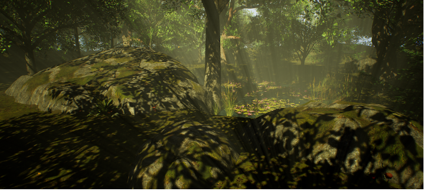
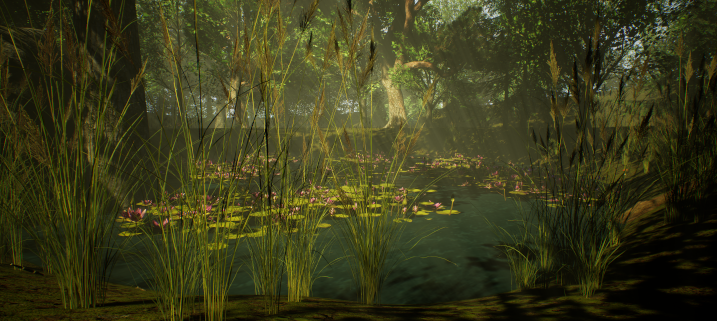
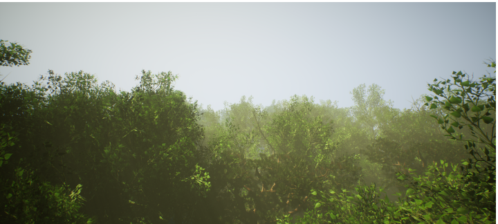
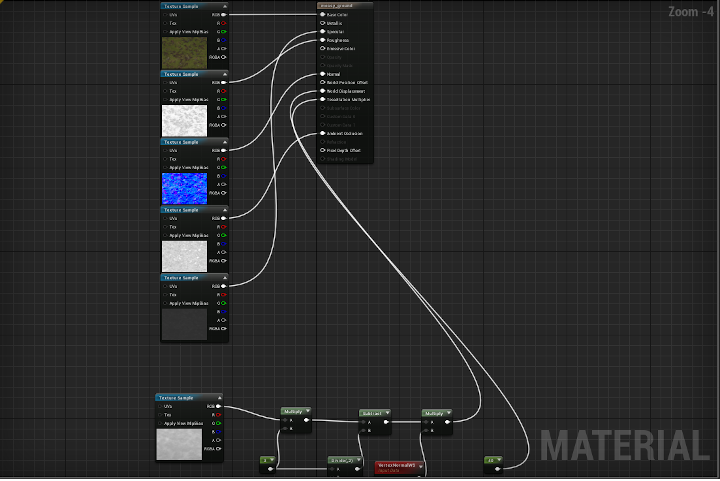
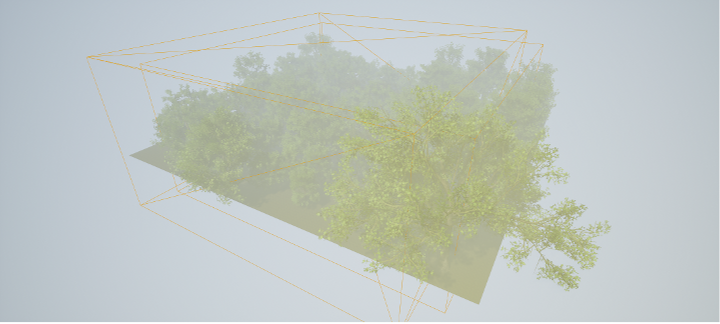

3D Okolje
izdelek
Izdelal sem 3d okolje v unreal engine 4. Tema okolja je mešani gozd, ki je obsvetljen z močno svetlobo. Fokus projekta je v središču gozda kjer je majhna mlaka obdana z drevesi,restlinami in prekrita z lokavnji ter velika skala prekrita z mahom in obdana z 2 drevesi,gobami in majhnim kamenjem.



postopek izdelave
ustvaril sem prazen projekt v Unreal engine 4 in zgradil teren s pomočjo orodja landscape, ki je zgradilo 7x7 kvadratov velik teren. Nato sem teren začel preoblikovati s orodji sculpt, ki dvigne ali spušča teren in smooth ki teren zgladi. Obe orodji sta bili nastavljeni na majhno moč za večji nadzor nad dogajanjem. Ko sem bil zadovojlen s terenom sem začel dodajati assets, večino preko megascans plugina in megascans bridge, ki je največja zbirka assetov, ima več kot 12000 fotorealističnih assetov, ki so brezplačni če uporabljaš Unreal engine 4. Importanje assetov je zelo lahko, ker asset naložimo in kliknemo export, lahko pa tudi nastavimo katere resolucije bo asset in kaj ter kako bomo exportali v unreal engine 4. Uporabil pa sem tudi quixel mixer v katerem lahko assete uredimo po svoji volji. Ko sem imel narejeno osnovo sem se lotil osrednjega motiva, začel sem s postavitvijo velike skale in 2 dreves nato sem postavil še 2 majše skale in uredil teren. Nato sem spremenil privzeto nebo z nebom ki ga lahko spremenim s klikom gumba npr. čas dneva, pozicijo sonca, svetlost in količino zvezd itd. Začel sem postavljati drevesa uporabil sem veliko različnih dreves sicer pa 3 vrste, vse sem postavil ročno da bi imel več nadzora. Nato sem dal tlem texturo in sicer mah z odpadlimi listi, dodal sem tudi tesselation ki naredi texturo 3 d s tem da poviša osvetljene dele in zniža temne dele in doda texturi veliko trikotnikov, originalna textura je setavljena iz 2 trikotnikov, tesselirana pa iz več npr. 100. To sem naredil tako da sem naredil texture blend v blueprintih, blueprinti so visualno kodiranje.

Združil sem 5 textur ki sestavljajo mešanico oz. texturo ki jo hočemo in nato sem dodal hightmap ki določa temne in svetle dele. Hightmap sem povezal z 2 constant expressiona ki določata do kje od kamere seže tesselation in kako močen bo tesselation. Dodal sem 2 multiply ki zmnožita 2 vhoda, ter divide ki odšteje 2 vhoda. Dodajanje vertexnormalWS omogoča texturi da se širi in krči. na pravokotniku kjer se vse poveže skupaj pa lahko nastavim kakšno vrsto tesselationa bo imela textura ter opcijo da textura ne popoka in da ima enako število pixlov na trikotnik. Dodal sem tudi meglo ki omogoča da imam v mapi god rays, ki so vidni sončni žarki, za ta učinek sodelujeta sonce in megla skupaj, nastavimo pa lahko koliko žarkov bo, kako svetli bodo, kakšno barvo bodo imeli. Sam sem nastavil žarke da so vidni in imajo toplo rumeno barvo, okolju dajo zelo lep poudarek in izgledajo dobro. Nastavil sem tudi post proccessing ki daje okolju spremembe svetlobe,detajlov itd. Naredil sem da je okolje bolj ostro, dodal sem tudi filter za bolj ostro okolje, naredil sem vinjeto za cinematični izgled, dodal sem chromatic abberation ki razdeli rgb kanale, spremenil barvo senc in poudarjenih delov itd. S spreminjanjem post procsessinga dosežemo več rahlih sprememb, ki okolje naredijo bolj realistično. Dodal sem lightmass importance volume, ki naredi kakovost svetlobe veliko boljšo.

V sliki sta vidna 2 kvadrata ki sta lightmass importance volume in post proccessing
Nato sem naredil mlako tako da sem površino vdolbil in dodal ploskvo na katero sem dodal texturo vode in sem postavil ploskvo pod tla ampak ker so tla vdolbljena se ploskev pokaže samo nad vdolbino. Na vodo in ob vodi sem dodal rastile s pomočjo orodja foliage s katerim lahko dodajamo rastline v določenem območju in lahko nastavimo koliko jih bo v območju, kako so velike (lahko tudi od-do), koliko so odstranjene ena od druge, ali se prilagodijo naklonu tal itd. Nato sem dodal še en teren ki je velik 15x15 i je pod originalnim terenom zato da lahko naredim hribe oz. povišam teren okoli 7x7 terena da dobi okolje neko mejo vidnosti.
Nato sem dodal še mah na skale in majhne detajle kot so rože, gobe, praproti, veje, hlodi itd. Dodal sem tudi efekt padajočih listov, ki naredi da navidezno iz dreves pada listje.
Priprava na končni izdelek
Za končni izdelek sem naredil 3 renderje ali upodobitve.Pred tem pa sem zgradil svetlobo ki je intenzivni proces, ki da vsem objektom več detajla, boljše sence in boljšo svetlobo. Ko je bil proces končan sem spremenil opcijo screen procentage, ki spremeni resolucijo okolja in sicer sem jo spremenil iz 100 na maximum 200 in da okolju izjemno dober izgled z kristalno čistim prikazom. Viewport sem spremenil v cinematic, ki naredi izgled okolja veliko boljši, da filemsko kakovost. V viewport options pa sem vkjučil game mode, ki da izgled končnega izdelka. Slike sem zajel s orodjem high resolution screenshot, ki da možnost upscale, ki naredi resolucijo slike večjo. Sam sem dal 3x večjo resolucijo od viewporta, ki da kot rezultat skoraj 4k resolucijo slike. Sam viewport pa je velik kot 1/3 ekrana. Če nastavimo večkratnik za resolucijo na veliko številko npr. 4 ali več pri velikosti viewporta lahko intenzivnost procesa povzroči da grafični gonilnik postane neodziven.
Zaključek
V izdelavo tega izdelka sem vložil 15h, izdelek je popolnoma 3 d zato lahko zajamem screenshot iz kakršnega koli kota. Pri izdelovanju so bili v pomoč različni pogledi še posebaj unlit, ki ne prikaže svetlobe in wireframe, ki prikaže trikotnike in mrežo. V okolje sem dodal veliko detajlov še posebaj v osrednji del. Moj cilj je bil da dosežem dokaj realističen kraj v čim lepši podobi.